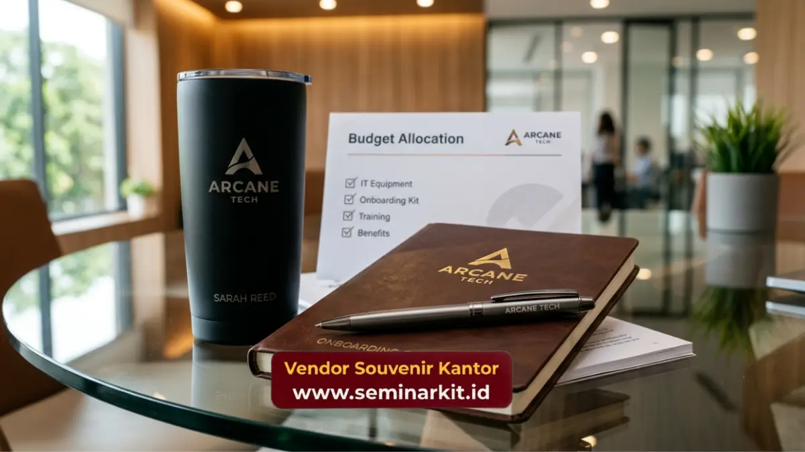

Biaya souvenir onboarding karyawan baru ditentukan oleh jumlah item per paket, jenis bahan, teknik cetak logo, dan volume pemesanan. Semakin banyak item dan semakin premium bahan yang dipilih, semakin tinggi biaya per paket, sementara volume besar umumnya menurunkan harga satuan.
- Jumlah item per paket menjadi faktor utama penentu total biaya.
- Bahan premium seperti stainless steel lebih mahal dibanding plastik namun lebih tahan lama.
- Teknik cetak logo memengaruhi biaya, mulai dari sablon hingga laser engraving.
- Volume pemesanan besar umumnya menurunkan harga satuan per paket.
- Anggaran sebaiknya ditentukan di awal sebelum memilih jenis item.
Apa Saja Faktor yang Memengaruhi Biaya Souvenir Onboarding?
Faktor yang memengaruhi biaya souvenir onboarding meliputi jumlah item, jenis bahan, teknik cetak logo, jumlah pesanan, dan kebutuhan packaging tambahan, sehingga total biaya per paket bisa berbeda cukup jauh antar perusahaan.
Jumlah Item per Paket
Semakin banyak item dalam satu paket welcome kit, semakin tinggi total biaya. Perusahaan dengan anggaran terbatas umumnya memilih dua item inti, sementara perusahaan dengan anggaran lebih besar dapat menambah tiga hingga lima item sekaligus.
Jenis Bahan yang Dipilih
Bahan menjadi variabel besar dalam kalkulasi biaya. Tumbler stainless steel misalnya lebih mahal dibanding tumbler plastik, namun menawarkan daya tahan dan kesan premium yang lebih baik untuk jangka panjang.
Teknik Cetak Logo
Teknik cetak logo turut memengaruhi biaya produksi. Sablon umumnya menjadi opsi paling efisien biaya, sementara laser engraving atau bordir cenderung lebih mahal namun memberi hasil lebih tahan lama dan terlihat premium. Pelajari lebih lanjut mengenai perbandingan teknik cetak branding souvenir kantor untuk menentukan pilihan terbaik.
Volume Pemesanan
Volume pemesanan berkorelasi terbalik dengan harga satuan. Semakin besar jumlah karyawan baru yang menerima paket dalam satu batch produksi, semakin efisien harga per unit yang didapat perusahaan.

Bagaimana Cara Menekan Biaya Tanpa Mengurangi Kualitas?
Cara menekan biaya tanpa mengurangi kualitas adalah dengan memprioritaskan item fungsional inti, memilih teknik cetak logo yang efisien, dan memesan dalam volume lebih besar sekaligus untuk mendapatkan harga satuan lebih rendah.
Beberapa strategi yang bisa diterapkan tim HR dan procurement:
- Memilih dua item inti berkualitas dibanding lima item dengan kualitas seadanya.
- Menyesuaikan teknik cetak logo dengan bahan agar hasil tetap rapi tanpa biaya berlebih.
- Mengonsolidasikan jadwal pemesanan agar volume produksi lebih besar dalam satu batch.
- Berkonsultasi dengan vendor untuk mendapatkan simulasi harga sesuai anggaran yang tersedia.
Apakah Pemesanan Volume Besar Selalu Lebih Hemat?
Pemesanan volume besar umumnya lebih hemat dari sisi harga satuan, namun perusahaan tetap perlu memperhitungkan proyeksi kebutuhan karyawan baru dalam periode tertentu agar stok tidak berlebih atau justru kurang.
Perusahaan dengan rekrutmen bertahap dapat mendiskusikan skema pemesanan berkala dengan vendor, sehingga tetap mendapat harga kompetitif tanpa harus memesan seluruh stok dalam satu waktu. Temukan tips selengkapnya pada panduan biaya dan tips memesan souvenir perusahaan secara massal.
Apakah Harga Souvenir Onboarding Bisa Dinegosiasikan?
Harga souvenir onboarding umumnya dapat didiskusikan, terutama untuk pemesanan volume besar atau kerja sama jangka panjang, karena vendor biasanya memiliki skema harga bertingkat sesuai kuantitas pesanan.
Diskusi harga akan lebih efektif jika perusahaan sudah menyiapkan estimasi kebutuhan tahunan, sehingga vendor dapat menawarkan skema kontrak berkelanjutan dengan harga lebih kompetitif dibanding pemesanan satuan berulang.
Kesimpulan
Biaya souvenir onboarding karyawan baru dipengaruhi oleh jumlah item, bahan, teknik cetak, dan volume pesanan. Menentukan prioritas item dan berkonsultasi dengan vendor sejak awal membantu perusahaan mendapatkan paket berkualitas sesuai anggaran yang tersedia.
Dapatkan simulasi biaya souvenir onboarding karyawan baru sesuai kebutuhan perusahaan Anda melalui vendorsouvenirkantor.web.id, lengkap dengan konsultasi gratis dan pilihan bahan sesuai anggaran.

Banner promosi: klik gambar untuk langsung terhubung ke WhatsApp tim sales.